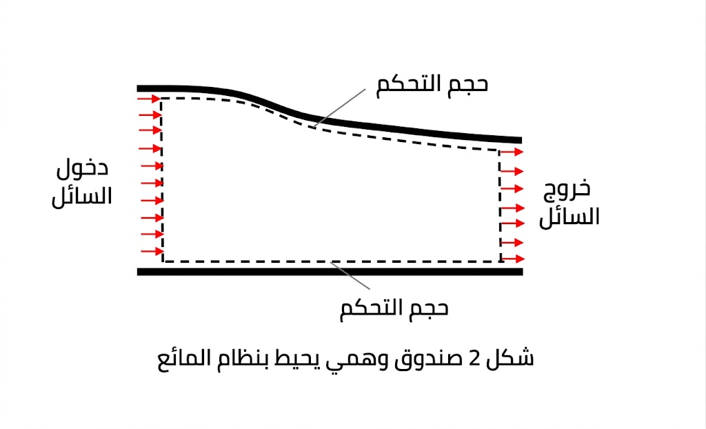

طريقة لاغرانج
كيفية وصف الإزاحة والسرعة والتسارع لأجزاء المائع.

النهج اللاغرانجي (Lagrangian Approach)
1. التعريف الأساسي
النهج اللاغرانجي (Lagrangian Approach) هو إطار وصف حركة الموائع من خلال تتبع حزمة مادية (Material Parcel) فردية أثناء انتقالها عبر المجال الزمني والمكاني، بحيث تكون الإحداثيات مرتبطة بالجسيم نفسه وليس بموقع ثابت في الفضاء. يحدث هذا الوصف لأن كل جسيم سائل يحمل معه خصائصه — الكثافة \(\rho\)، الضغط \(p\)، السرعة \(\mathbf{u}\) — ويتغير سلوكه وفق القوى المؤثرة عليه، مما يجعله مناسباً بشكل خاص للمشاكل ذات الأسطح الحرة (Free Surface) والتفاعل بين السائل والهيكل (Fluid-Structure Interaction). الحدس الفيزيائي يكمن في أن المراقب «يركب» الجسيم ويقيس التغيرات التي يشاهدها مباشرة، وهو ما يُترجم رياضياً إلى المشتق المادي (Material Derivative) الذي يجمع التغيّر المحلي مع التغيّر الناتج عن الانتقال المكاني. يقابل هذا النهج النهج الأويلري (Eulerian Approach) الذي يثبت نقاط المراقبة في الفضاء ويرصد مرور الجسيمات بها، كما يقابله النهج اللاغرانجي-الأويلري التعسفي (Arbitrary Lagrangian-Eulerian, ALE) الذي يسمح للشبكة بالحركة ضمن حدود وسيطة بين النهجين.
2. الصياغة الرياضية
المشتق المادي (Material Derivative)
المشتق المادي هو العمود الفقري للصياغة اللاغرانجية، ويعرّف لأي كمية قياسية \(\phi(\mathbf{x}, t)\) بالعلاقة:
حيث: - \(\dfrac{D\phi}{Dt}\): معدل تغيّر الكمية \(\phi\) كما يلاحظها مراقب يتحرك مع الجسيم (وحدة تعتمد على \(\phi\))، - \(\dfrac{\partial\phi}{\partial t}\): المعدل المحلي (Local Rate) عند نقطة ثابتة في الفضاء، - \(\mathbf{u}\): متجه سرعة الجسيم (m/s)، - \(\nabla\phi\): تدرّج \(\phi\) في الفضاء (وحدة \(\phi\)/m).
معادلة الاستمرارية (Continuity Equation)
بالصيغة اللاغرانجية:
أو بصيغة مكافئة:
حيث \(\rho\) هي كثافة السائل (kg/m³). للسوائل غير القابلة للانضغاط (Incompressible Fluids):
معادلة الزخم (Momentum Equation)
معادلة نافييه-ستوكس (Navier-Stokes) بالصيغة اللاغرانجية:
حيث: - \(\rho\dfrac{D\mathbf{u}}{Dt}\): تسارع الجسيم المادي (N/m³)، - \(-\nabla p\): قوة تدرّج الضغط (Pa/m = N/m³)، - \(\mu\): اللزوجة الديناميكية (Pa·s)، - \(\nabla^2\mathbf{u}\): لابلاسيان السرعة (s⁻²)، - \(\mathbf{f}\): قوى الجسم الخارجية لكل وحدة حجم (N/m³)، مثل الجاذبية \(\rho\mathbf{g}\).
الشروط الحدية والابتدائية
الشروط الابتدائية: تُحدد حالة كل جسيم عند \(t = 0\):
الشروط الحدية: - سطح حر (Free Surface): شرط ديناميكي \(p = p_{\text{atm}}\) وشرط حركي يمنع اختراق السطح. - جدار صلب (Solid Wall): شرط عدم الانزلاق (No-Slip) \(\mathbf{u} = \mathbf{u}_{\text{wall}}\) أو انزلاق كامل (Free-Slip) حسب النموذج.
الافتراضات الأساسية
- استمرارية الوسط: يُفترض أن السائل وسط مستمر (Continuum Assumption) ولا يوجد فراغ بين الجسيمات.
- نظام إحداثيات مرتبط بالجسيم: الإحداثيات \(\mathbf{X}\) تحدد هوية الجسيم (إحداثيات لاغرانجية)، بينما \(\mathbf{x}(t)\) موقعه اللحظي.
- الإشارات الاصطلاحية: اتجاه إيجابي لـ \(\nabla p\) يشير نحو زيادة الضغط؛ القوة الناتجة \(-\nabla p\) تدفع السائل من مناطق الضغط العالي إلى المنخفض.
3. التطبيق في الهندسة البحرية
مثال: تحليل الاهتزاز الداخلي (Sloshing) في خزانات السفن
المسألة الهندسية: اهتزاز السائل داخل الخزان (Sloshing) هو ظاهرة حرجة في تصميم سفن نقل الغاز الطبيعي المسال (LNG Carriers) والسفن الحاوية ذات الخزانات الجزئية الامتلاء. عندما تتعرض السفينة لحركات دورانية (Roll/Pitch) بفعل الأمواج، يتحرك سطح السائل الحر بشكل غير خطي، مما يولّد قوى ديناميكية قد تصل إلى عدة أضعاف وزن السائل الساكن، وتؤثر على استقرار السفينة وهيكل الخزان.
المعادلات المستخدمة: في التحليل اللاغرانجي للاهتزاز الداخلي، تُحل معادلات الاستمرارية والزخم أعلاه مع: - معامل رقم رينولدز (Reynolds Number): \(\displaystyle Re = \frac{\rho U L}{\mu}\) حيث \(U\) سرعة نموذجية (~1–5 m/s في خزان بحجم 20×10×8 m)، و\(L\) طول مميز (~10 m). - عدد فرود (Froude Number): \(\displaystyle Fr = \frac{U}{\sqrt{gL}}\) (~0.1–0.3 للاهتزاز الداخلي)، وهو الأهم لأن الظاهرة محكومة بالجاذبية. - شرط السطح الحر: \(p = p_{\text{atm}}\) على السطح، مع شرط الحركة الحرة الذي يربط سرعة السطح بتغيّر ارتفاعه.
قيم نموذجية: لخزان LNG بسعة 16,000 m³ ومعدل امتلاء جزئي (Partial Fill) بنسبة 30%، يمكن لقوى الاهتزاز الداخلية أن تولّد عزم انقلاب يصل إلى 10–30 MN·m، وتتجاوز الإجهادات في جدران الخزان قيم التصميم الاعتيادية إذا لم تُحسب بدقة.
كيف يدخل المفهوم في التصميم: يستخدم المهندس النهج اللاغرانجي لتتبع حركة السطح الحر بدقة عالية، خاصة عند حدوث اصطدام السائل بجدران الخزان (Slamming) أو تشكل دوامات كبيرة. النتائج تُستخدم لتحديد: - مواقع وأبعاد الحواجز المضادة للاهتزاز (Anti-Slosh Baffles). - سماكة جدران الخزان في المناطق عالية الإجهاد. - متطلبات أنظمة التحكم بالاستقرار (Stabilization Systems).
الأدوات والنماذج الشائعة:
- SPH (Smoothed Particle Hydrodynamics): طريقة لاغرانجية بحتة تعتمد تقريب النواة (Kernel Approximation) لتمثيل الحقول المستمرة. شائعة في محاكاة السطوح الحرة المعقدة والانفصال.
- ALE (Arbitrary Lagrangian-Eulerian): تجمع بين تتبع السطح الحر (لاغرانجي) وحساب التدفق الداخلي بشبكة متحركة (أويلري تعسفية). تُستخدم بكثرة في OpenFOAM وANSYS AQWA.
- OpenFOAM: يوفر أدوات مثل interFoam مع VOF (Volume of Fluid) — وهي أويلرية أساساً — لكن الإضافات اللاغرانجية مثل reactingTwoPhaseEulerFoam تدعم التتبع الهجين.
ما يفسره المفهوم: النهج اللاغرانجي يفسر لماذا تتراكم الطاقة في مناطق محددة من الخزان (مثل الزوايا) وكيف تنتقل الموجات الداخلية من حركة بسيطة إلى حركة فوضوية (Chaotic Sloshing) عند تجاوز حد معين من عدد فرود، وهو تفسير يصعب الحصول عليه بالنهج الأويلري التقليدي بسبب صعوبة تمثيل السطح الحر المتشكّل.
4. القيود والافتراضات
-
صحة الصياغة وحدودها: الصياغة اللاغرانجية تفترض استمرارية الوسط، لذا فهي غير صالحة عند مقاييس أقل من متوسط المسار الحر (Mean Free Path) للجزيئات. كما أن افتراض عدم الانضغاط ينطبق على معظم تطبيقات NAME لكنه يفشل في ظواهر الصدمة المائية (Water Hammer) حيث تتغير الكثافة بشكل ملحوظ.
-
التكلفة الحسابية والحساسية العددية: في طرق SPH، يؤدي تراكم الجسيمات (Particle Clustering) أو تشتتها المفرط (Excessive Dispersion) إلى تدهور دقة التقريب النووي (Kernel Approximation Error)، مما يتطلب تصحيحاً مستمراً لتوزيع الجسيمات. عدد الجسيمات المطلوب لمحاكاة واقعية لخزان بحجم 16,000 m³ يتراوح بين \(10^6\) و\(10^7\) جسيم، مما يستهلك ساعات إلى أيام حسابية حتى على الحواسيب المتوازية.
-
تشوه الشبكة في ALE: في الطرق الهجينة ALE، يؤدي التشوه الشديد للشبكة (Mesh Distortion) إلى انهيار الحل العددي، مما يستلزم إعادة شبكة دورية (Remeshing) تكلف حسابياً وقد تُدخل أخطاءً رقمية إضافية.
-
متى لا يصلح النهج اللاغرانجي: لا يُفضَّل النهج اللاغرانجي البحت في مشاكل الدوران المحيطي واسع النطاق (Large-Scale Ocean Circulation) أو في التدفقات ذات المجالات الكبيرة جداً حيث يكون النهج الأويلري أكثر كفاءة. كذلك، عند وجود تفاعلات متعددة الأطوار (Multiphase Flows) مع غازات قابلة للانضغاط، يصبح النهج الهجين ضرورياً. الخطأ الشائع هو تطبيق SPH بدون تصحيح لزوجة اصطناعية (Artificial Viscosity) مناسبة، مما ينتج عنه تذبذبات ضغط غير فيزيائية عند السطح الحر.